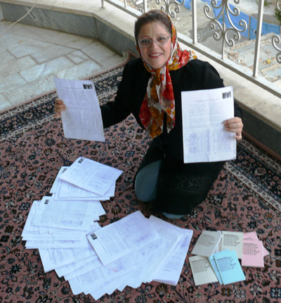
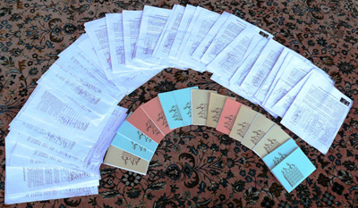
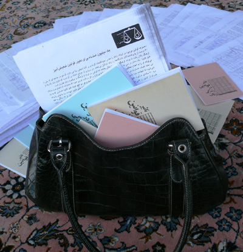

|
|

به مناسبت 8 مارس، روز جهانی زن
بسیاری از زنان هموطنم هنوز نمیدانند هشتم مارس چه روزی است!
زهره امین
يكشنبه25 اسفند 1387
صبح با صدای زنگ اساماس موبایل از خواب بیدار میشوم. شب پیش تا ساعت 4 صبح بیدار بودم و داشتم غذایی که پسرم تازه ساعت یک صبح یادش افتاده بود به من بگوید باید ببرد مدرسه تا با دوستانش بخورد آماده میکردم و دو روزنامهای که تا نخوانم خوابم نمیبرد را میخواندم. دو سه ساعتی بیشتر نخوابیدهام و گیجم.
دیدن متن اسام اس به یک باره گیجیام را در خود حل میکند و لبخندی بر پهنای صورتم مینشاند. دوستی قدیمی روز جهانی زن را تبریک گفته است. وقتی هیچکدام از رسانهها حتی اشارهای به این روز نمیکنند و میخواهند ما را نادیده بگیرند رسیدن یک پیام از یک دوست چقدر خوشحالکننده است.
تا وقتی دست و صورتم را بشویم و چایی دم کنم و بخورم چند اساماس دیگر با همین مضمون به دستم میرسد. احساس نشاطی عجیب به من دست میدهد. واقعا امروز روز من و زنان دیگر سراسر دنیاست؟ با لذت چایم را مینوشم و من هم متقابلا اساماسهایی در این مورد برای دوستانم میفرستم.
اما چه برنامهای برای این روز میتوانم برای خود بریزم؟ بعد از سالها تلاش برای گرفتن سالن برای برگزاری مراسم روز زن در شهری که در آن زندگی میکنم(کرج) و جواب منفی مقامات که هشتم مارس را به عنوان روز زن قبول ندارند، امسال همهمان خسته و سرخورده اصلا برنامهای نداشتیم.
علاوه بر آن با این لیستی که شب پیش همسرم به من داده بود و باید حتما تا بعد از ظهر انجامشان میدادم و برای دست درد شدیدم به توصیه پزشک باید به استخر میرفتم دیگر وقتی برایم نمیماند.
پیش خودم گفتم حیف که وسیله تکثیر بیانیه کمپین به مناسبت 8 مارس را هم ندارم... که یکدفعه یاد دفترچههای کمپین افتادم .

چند روز پیش دوستی تعداد زیادی از آنها را - که مدتی بود قدیمیها را تمام کرده بودم - به من داده بود. برای زنان هموطنم چه هدیهای بهتر از آشنا شدن با حقوق حقهشان! خوب شد... تبریک روز زن را زبانی میگویم و دفترچه را دستی میدهم...
بلند شدم با عجله حاضر شدم و تعداد زیادی دفترچه کمپین را در کیفِ رودوشی و تعداد زیاد دیگری را در ساک استخرم جا دادم. لیست جاهایی که باید می رفتم و خریدها را برداشتم و به راه افتادم.
در راه، ناخودآگاه برای تمام زنانی که از خیابان میخواستند رد شوند ماشین را نگه میداشتم و می ایستادم تا کاملا رد شوند. برای پیرزنی با کمر خمیده که دختر حدودا 60 سالهاش دستش را گرفته بود و مادر جوانی که یک بچهی سه ساله در بغل داشت کالسکهی بچهی دیگرش را به زحمت از بلندی وسط بلوار پایین میآورد.
اولین مقصدم بانک بود. همسرم شدیدا نیاز به پول داشت و میخواستم تمام پساندازم را بیرون بکشم تا مشکلش حل شود که البته مشکل او را مشکل خودم هم میدانستم. از من قول گرفته بود بعد از گرفتن پول بیاورم و در خانه بگذارم و سپس به کارهای دیگر برسم. ماشین را دورتر از بانک پارک کردم و به راه افتادم.
با دیدن سهزن از سه نسل مختلف که از پرایدی پیاده میشدند، نفس عمیقی کشیدم، اولین تبریک.
دست در کیفم کردم، دفترچهای درآورم و به طرفشان رفتم. با لبخندی دفترچه را به طرفشان دراز کردم و گفتم :
خدمت شما! امروز هشت مارسه. روز جهانی زن. این روز رو بهتون تبریک میگم. چهره هر سه اول بهتزده و با پایان یافتن حرفم هر سه با لبخندی شکفت، تشکر کردند. زن نسل میانه دفترچه را از دستم گرفت. تشکر کرد و گفت چه کار قشنگی میکنی، اصلا یادم نبود. یعنی فرصتش را ندارم به آن فکر کنم. رادیو تلویزیون و هیچجا هم که اعلام نمیکنند.
بعد متقابلا این روز را به من تبریک گفت و با مادر و دخترش از پسرفت حقوق زنان در این سالهای اخیر صحبت کردند و پس از شوخیهای مرسوم این روزها، هر چهار نفرمان با خنده از هم جدا شدیم. از دور دیدمشان در پیادهرو سهتایی روی دفترچه دولا شده بودند و آن را می خواندند.
شروع خیلی خوبی بود.
در بانک شماره گرفتم و صندلیای را برای نشستن انتخاب کردم که بین راه از چند زن بگذرم. به زن اول(مانتویی) تبریک گفتم و دفترچه را دادم. با خوشحالی تشکر کرد و داشت روی جلد را نگاه میکرد که مردی خودش را از یکی از باجهها به ما رساند و دفترچه را از دست زن قاپید. شوهرش بود. جلدش را نگاه کرد و با دست چپ بال چپ کتش را باز کرد و با دست راست آن را در جیب بغلش گذاشت. با مهربانی ساختگی اول از من تشکر کرد (اصلا نمیدانست موضوع چیست) و بعد به زنش گفت: "بگذار اول من بخوانم. اگر خوب بود میدهم تو هم بخوانیاش و به طرف باجه برگشت." من درآن موقع داشتم به زن دوم دفترچه میدادم و هر دو شاهد رفتار آن مرد بودیم.
زن اول با نگاه خجالتزده و مأیوس ما را نگاه کرد و بعد سرش را با افسوس پایین انداخت. زن دوم (چادری) در حالیکه دفترچه را باز میکرد بلند گفت: "اگر من جای آن زن بودم، پدرِ شوهرم را در میآوردم. این چه رفتار زشتی بود که کرد؟" و بعد پرسید مگر روز تولد حضرت فاطمه چهاش است که یک روز دیگر را انتخاب کردهاید؟
گفتم ما انتخاب نکردهایم. تاریخچهی روز جهانی زن به سال 1857 در آمریکا برمیگردد که کارگران زن کارخانهی پارچهبافی به دستمزد کم و ساعت کاری زیاد و شرایط وحشتناک آنروزها برای اعتراض یه خیابانها ریختند و تظاهرات کردند و سالها بعد در جهان این روز را به عنوان روز زن پذیرفتند. درضمن هشتم مارس روز جهانی زن است. برای همهی مردم دنیا، همه دینها، حتی بیدینها. حکومت ما روز تولد حضرت فاطمه را به عنوان روز مادر در ایران انتخاب کرده. این در ایران است و آن در همه کشورهای دنیا. بعد از چند سوال دیگر او هم این روز را به من تبریک گفت و دفترچه را در کیفش گذاشت.

من دفترچهای دیگر به سمت زن جوانی که کنار شوهرش نشسته بود دراز کردم . زن داشت با تردید دفترچه را میگرفت و تشکر نیمبندی میکرد که شوهرش با خنده گفت: بگیرش، خرید یک کادوی دیگر بر من واجب شد. و به من گفت: "مرسی خانم. باز هم به شما!" و دوتایی شروع کردند به خواندن دفترچه.
صندلی خالی پیدا کردم و نشستم. به چند زن دیگر که کنار و در ردیف جلو و عقب نشسته بودند تبریک گفتم و دفترچه دادم . بحثهایی شروع شد. اکثرشان نمیدانستند اصلا چنین روزی در جهان وجود دارد. در مورد قوانین ضد زن حرف زدیم. یکیشان ناامیدانه میگفت چه کسی برای ما ارزش قائل است؟ خودمان را که دیگر نباید گول بزنیم. دیگری گفت مثل همین خانم (مرا نشان داد) اگر خودمان را باور کنیم و تلاش کنیم دیگران هم باورمان میکنند.
او گفت: همین امروز میروم و به تمام زنان فامیل این روز را تبریک میگویم. میخواهد کسی خوشش بیاید میخواهد خوشش نیاید.
خانمی از ردیفهای دور جلو آمد و کنارمان نشست تا ببیند چه خبر است و تا وقتی نوبت من برسد بحث همینطور ادامه داشت.
تصمیم گرفتم بعد از بانک پای پیاده به طرف مرکز خرید اصلی شهر کرج بروم. بخصوص که برای خرید عید حتما شلوغ است و لوازم فنی مورد نیاز شوهرم را از همان نزدیکی بخرم.
در راه به هر زنی بر میخوردم شادمانه این روز را تبریک میگفتم و دفترچهای میدادم. اکثرا اول تعجب و بعد خیلی خوشحال میشدند.
جلوی تعاونی زنی را دیدم با قیافهی آفتاب سوخته و لباسهایی کهنه در حالیکه چادرش را به کمرش گره زده بود و پیت روغنی روی سر و کیسههای نایلونی پر از پستههای ریز و تخمه و نخود نامرغوب در دستهایش بود و داشت از تعاونی بیرون میآمد. خرید شب عیدش بود.
با تردید جلو رفتم. فکر میکردم با این همه بار آیا حوصلهی مرا دارد؟ اصلا با کدام دست دفترچه را از من بگیرد؟
دلم را به دریا زدم. رفتم جلو. دفترچه را از لای درز کیسهی خریدش انداختم تو و گفتم مادر جان خسته نباشی. امروز روز جهانی زنه. مبارک باشه. اول قدری به من خیره شد و بعد کیسههایش را به روی پلههای تعاونی گذاشت و پیت را از روی سرش برداشت و با تاسف سری تکان داد و گفت: "ایای ای... زن... بدبخت زن. بیچاره زن... کاش می مردم و زن آفریده نمیشدم. آخ..."
بعد به خودش آمد: "حالا این روز که گفتی کی بوده؟" گفتم امروز. فکر کرد دولت ما این روز را تعیین کرده. گفت: "به جای این کارها بیان حق و حقوق من و بچههامو بدن. شوهرم مرده و پنج سر عائله دارم. چندر غاز حقوق بازنشستگیاش رو میدن دستم. دفترچه را درآورد و گفت دستت درد نکنه. میرم میدم بچههام برام بخونن."
خداحافظی کردیم.

رفتم خریدهایم را کردم. در راه برگشتن مانتویی پشت ویترین توجهم را جلب کرد. گفتم هم میروم به فروشندههای خانم دفترچه میدهم و تبریک میگویم و هم مانتو را قیمت میکنم. ایستادم تا صحبت خانم فروشنده با مرد مشتری تمام شود. مرد نسبتا مسن داشت از فروشنده میپرسید دیروز خانمم در این ردیف (ردیف حراجیهای 14 هزار تومانی) مانتویی پسندید. شما یادتان نیست کدام؟ من پول همراهم نبود. گفتم نمیخواهد بخرد. آخر هنوز عیدیهایمان را ندادهاند. حالا دیگر با من نمیآید خرید. میگوید دیگر نمیخواهمش. پول جور کردم، میخواهم برایش کادو بخرم و از دلش در بیاورم. دختر یادش بود زن کدام را پسندیده بود و داشت نشانش میداد.
فرصت را غنیمت شمردم و دفترچهای به دختر فروشنده دادم و روز زن را تبریک گفتم. دختر فروشنده تشکر کرد و مرد خندید و گفت: "بهانهی من هم جور شد. ممنون خانم. روزتان مبارک. خانم من واقعا یک فرشته است. تمام این سالها با بد و خوب من ساخته." دفترچهای به او دادم و گفتم این را هم از قول من به خانمتان بدهید . گفت چشم!
از آنجا بیرون آمدم و بین راه تقریبا تمام دفترچههای کیفم را بین زنان پخش کردم.
لبخند آنها بهترین تشکر برایم بود. تنها تاسفم این بود بیشترشان روزی را به نام هشتم مارس یا روز جهانی زن را نمیشناختند. بعضی قدیمیترها میگفتند شاید داری اشتباه میکنی و منظورت 25 آذر، روز مادر دورهی شاه است و میایستادم و به طور مختصر توضیح میدادم.
متاسفانه جو برای امضا گرفتن مناسب نبود. به خاطر ازدحام خرید شب عید پلیس هر چند قدم ایستاده بود و مردم هم بیشترشان عجله داشتند.
برای ناهار رفتم به مرکز خرید خیریهای که زنان خیر برای کمک به زنان خودسرپرست ترتیب داده بودند. دیر وقت بود و فقط سمبوسهای خانگی نصیبم شد و تصمیم گرفتم برای کمک چند خرید دیگر انجام دهم. به هر غرفهای که میرفتم روز جهانی زن را تبریک میگفتم. چند نفرشان آشنا درآمدند. قبلا ورقه کمپین را امضا کرده بودند و به بقیه در مورد کمپین توضیح میدادند و میگفتند که هر جا با من به مهمانی یا خریدی جایی میرفتند من فورا ورقه کمپین را در میآوردم و حرف را به حقوق زنان میکشاندم.
درد شدید دستم به یادم آورد که اگر نوبتی هم که باشد؛ نوبت استخر رفتن رسیده است. از همان بدو ورود به پذیرش استخر شروع کردم به تبریک گفتن. خوشبختانه کیف استخرم پر از دفترچه بود. پرسنل قبلی استخر همه دفترچه گرفته بودند و ورقه کمپین را امضا کرده بودند. اما چند ماه بود که بعد از تغییر مدیریت کلیهی کارکنان عوض شده بودند.
در استخر میشد با فراغ بال بیشتری حرف زد. تمام ناجیها آمدند دورم جمع شدند و گفتند از رفتارت متوجه شده بودیم فمینیست هستی. از کجا؟ من که منظورشان را نفهمیدم.
یاد دو سال و نیم پیشم افتاده بودم که چطور و با چه شوق و ذوقی امضا جمع میکردم و هنوز هم که هنوز است گاهی امضا کنندهها مرا در خیابان میبینند و به آغوش میکشند و میپرسند یک میلیون هنوز تمام نشده؟
امروز با همان شور و شوق اولیه در مورد لزوم تغییر قوانین ضد زن با خانمها بحث میکردم. در گرمای داغ سونا زنی میگفت برای من خجالت آور است که حق و حقوق انسانی مرا نمیدهند اما برای شیری که به بچهام میدهم و وظیفهی مادریام است نرخ تعیین کردهاند. اگر راست میگویند قانون ارث و حق طلاق را درست کنند. سر شیردادن بچه که نمیتوانم منت بگذارم.
در جکوزی آب داغ بحث شدیدتر بود. بیشترشان زنانی بودند که از شدت پادرد و دستدرد برای آبدرمانی بیشتر با عصا و یا به کمک دیگران به استخر آمده بودند. در این روزهای خانهتکانی تعدادشان بیشتر بود. میگفتند یک عمر پختیم و شستیم و بچهداری کردیم حالا مریض و بد هیکل نشستهایم کنج خانه. نه حقوق و ملک و املاک از خودمان داریم و نه احترامی. راه به راه شوهرمان تهدید میکند اگر خوب نشوی میرویم یک زن جدید میگیریم.
موقع شنا هم هر که را میدیدم به هر بهانهای روز جهانی زن را تبریک میگفتم. جوری شده بود که همه به هم تبریک میگفتند. فقط مانده بود بروم میکروفون استخر را بگیرم و همانجا یک جشن درست حسابی بگیریم. خوشبختانه زنان سر مسائلی که مربوط به خودشان است ترس چندانی ندارند. نمیگذاشتند بروم و این طولانیترین مدت زمانی بود که در استخر میماندم.
بعد از استخر یادم افتاد از قبل 50 دفترچه در صندوق ماشین از خیلی قبل گذاشتهام. با همهی خستگی و تقریبا در حال نیمه بیهوشی رفتم به میدان اسبی عظیمیه کرج . گفتم تا هنوز روز زن است باید تبریک گفت.
اول در پارک چند تایی به خانمها دادم. دیدم پلیس دارد نزدیک میشود. رفتم جلوی بازار شام، یکی از مراکز مهم خرید اهالی عظیمیه. جلویش بساط هفتسین و ماهی شب عید و آجیل چیده بودند. محیط شادی بود و با دادن دفترچه شادتر هم شده بود. خانمها به محض گرفتن آن لبخند غرایی میزدند.
زن و شوهر مسنی توجهم رو جلب کردند که هر دو با موی سپید دست در دست هم داشتند. دفترچه را که به زن دادم و روز زن را تبریک گفتم، زن تشکر کرد و مرد کلاهش را به نشانه ی احترام از سرش برداشت و گفت کارتان بسیار زیباست خانم محترم! با این حرفش کلی از خستگیام در رفت.
شب دیر وقت به خانه رسیدم.
همسرم مثل شبهای معمولی دیر به خانه آمد و چیزی نگفت. گلی هم در دستش نبود. اصلا یادش نمانده بود امروز روز زن است. پسرم هم همینطور. فکر میکنم کمکاری و کم توقعی خودمان است. شاید هر زن باید از خانهی خودش شروع کند.
به شوخی به شوهرم گفتم من تمام مردهای دیگر را تشویق میکنم روز زن به همسرشان تبریک بگویند و گلی چیزی بخرند. اما شوهر خودم یادم رفت.
گفت: "باور کن یاد نبود. اصلا تاریخ یادم نبود. هیچجا هم تبلیغ نمیکنند که آدم یادش بماند. روی هیچ مغازهای هم که ننوشته "کادوی روز زن یادت نره!"